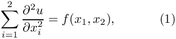
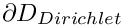
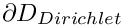
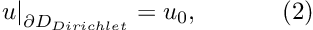
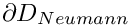
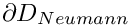
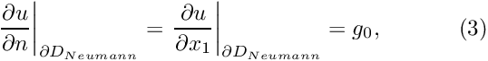

In this document we discuss the adaptive solution of a 2D Poisson problem with Neumann boundary conditions.
 in the rectangular domain![$D = \left\{ (x_1,x_2) \in [0,1] \times [0,2]\right\} $](form_1.png) . The domain boundary . The domain boundary  , where , where ![$ \partial D_{Neumann} = \left\{ (x_1,x_2) | x_1=1, \ x_2\in [0,2] \right\} $](form_3.png) . On  we apply the Dirichlet boundary conditions . On  we apply the Dirichlet boundary conditions  where the function is given. On  we apply the Neumann conditions is given. On  we apply the Neumann conditions  where the function is given. is given. |
In two previous examples we demonstrated two approaches for the non-adaptive solution of this problem. In both cases we created a "bulk" mesh of QPoissonElements and applied the flux boundary conditions by "attaching" PoissonFluxElements to the appropriate boundaries of the "bulk" Poisson elements. In the first implementation we simply added the pointers to the flux elements to the bulk mesh; in the second implementation we stored the surface and bulk elements in separate meshes and combined them to a single global mesh. We will now demonstrate that the second approach greatly facilitates the automatic problem adaptation. We use the mesh adaptation procedures of the RefineableQuadMesh class to adapt the bulk mesh, driven by the spatial error estimates in that mesh. The flux elements are neither involved in nor adapted by the refinement process of the bulk mesh. We therefore use the function Problem::actions_before_adapt() to delete the flux elements before the adaptation, and Problem::actions_after_adapt() to re-attach them once the bulk mesh has been adapted.
As in the previous example we choose a source function and boundary conditions for which the function
![\[ u_0(x_1,x_2) = \tanh(1-\alpha(x_1 \tan\Phi - x_2)), \ \ \ \ \ \ \ \ \ (4) \]](form_10.png)
is the exact solution of the problem.

Since many functions in the driver code are identical to that in the non-adaptive version, discussed in the previous example, we only list those functions that differ. Please consult the source code two_d_poisson_flux_bc_adapt.cc for full details of the implementation.
Global parameters and functions
The specification of the source function and the exact solution in the namespace TanhSolnForPoisson is identical to that in the single-mesh version discussed in the previous example.
The driver code
The main code is virtually identical to that in the previous non-adaptive example . The only change is the provision of an argument to the Newton solver
which indicates that the problem should be adapted up to three times.
The problem class
The problem class is very similar to that in the non-adaptive implementation: The only difference is the provision of the functions actions_before_adapt(), actions_after_adapt(), set_prescribed_flux_pt(), and delete_flux_elements(...) which we discuss in more detail below.
[See the discussion of the 1D Poisson problem for a more detailed discussion of the function type PoissonEquations<2>::PoissonSourceFctPt.]
The Problem constructor
We create the bulk mesh and surface mesh as before. Next we create the spatial error estimator and pass it to the bulk mesh.
Apart from this, the problem is constructed as in the non-adaptive previous example.
Actions before adaptation
The mesh adaptation is driven by the error estimates in the bulk elements and only performed for that mesh. The flux elements must therefore be removed before adaptation. We do this by calling the function delete_flux_elements(...), and then rebuilding the Problem's global mesh.
Actions after adapt
After the (bulk-)mesh has been adapted, the flux elements must be re-attached. This is done by calling the function create_flux_elements(...), followed by a rebuild of the Problem's global mesh. Finally, we set the function pointer to the prescribed flux function for each flux element.
Delete flux elements
This function loops over all the flux elements (i.e. those in the surface mesh) and deletes them and their storage.
IMPORTANT: Note how the elements are first deleted "manually" and then "flushed" from the surface mesh, using the function Mesh::flush_element_and_node_storage(). This is necessary because deleting the surface mesh directly (by delete surface_mesh_pt;) would also delete its constituent Nodes which are shared with the bulk mesh and must therefore be retained!
Actions before solve
This remains as before.
Post-processing
This remains as before.
Create flux elements
This remains as before.
Source files for this tutorial
- The source files for this tutorial are located in the directory:
demo_drivers/poisson/two_d_poisson_flux_bc_adapt/ - The driver code is:
demo_drivers/poisson/two_d_poisson_flux_bc_adapt/two_d_poisson_flux_bc_adapt.cc
PDF file
A pdf version of this document is available.